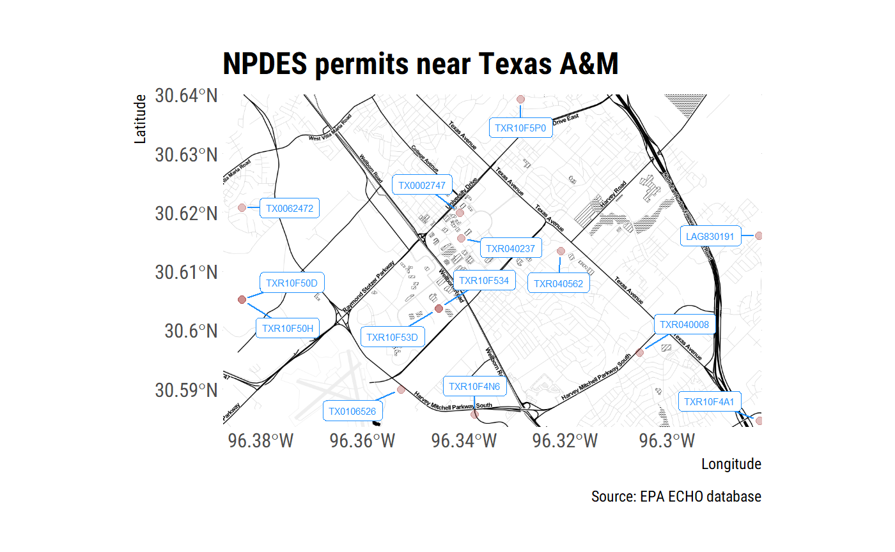

Overview
echor downloads wastwater discharge and air emission data for EPA permitted facilities using the EPA ECHO API.
Installation
devtools::install_github("mps9506/echor")Examples
Download information about facilities with an NPDES permit
We can look up plants by permit id, bounding box, and numerous other parameters. I plan on providing documentation of available parameters. However, arguments can be looked up here: get_cwa_rest_services_get_facility_info
library(tidyverse)
library(echor)
## echo*GetFacilityInfo() will return a dataframe or simple features (sf) dataframe.
df <- echoWaterGetFacilityInfo(output = "df",
xmin = '-96.387509',
ymin = '30.583572',
xmax = '-96.281422',
ymax = '30.640008')
head(df)
#> # A tibble: 6 x 25
#> ObjectId CWPName SourceID CWPStreet CWPCity CWPState CWPStateDistrict
#> <chr> <chr> <chr> <chr> <chr> <chr> <lgl>
#> 1 1 BOSSIER ~ LAG8301~ 3228 BARK~ BENTON LA NA
#> 2 2 BROADSTO~ TXR10F5~ NW OF ATL~ BRYAN TX NA
#> 3 3 BROADSTO~ TXR10F5~ NW OF ATL~ BRYAN TX NA
#> 4 4 CITY OF ~ TXR0400~ WITHIN CI~ COLLEG~ TX NA
#> 5 5 HEAT TRA~ TX01065~ 0.25MI SW~ COLLEG~ TX NA
#> 6 6 HOLLEMAN~ TXR10F4~ NW OF HOL~ COLLEG~ TX NA
#> # ... with 18 more variables: CWPZip <chr>,
#> # MasterExternalPermitNmbr <chr>, CWPCounty <chr>, CWPEPARegion <chr>,
#> # FacFederalAgencyCode <lgl>, FacLong <chr>,
#> # CWPFacilityTypeIndicator <chr>, ReceivingMs4Name <lgl>,
#> # SpeciesCriticalHabitalFlag <lgl>, ExposedActivity <lgl>,
#> # AssociatedPollutant <lgl>, ControlMeasure <lgl>,
#> # ControlMeasureSchedule <lgl>, EjscreenFlagUs <chr>,
#> # Over80CountUs <chr>, PctilePctpre1960Us <chr>,
#> # PctileProximityRmpUs <chr>, PctileProximityTsdfUs <chr>When returned as sf dataframes, the data is suitable for immediate spatial plotting or analysis:
library(ggmap)
library(sf)
library(ggrepel)
## This example requires the development version of ggplot with support
## for geom_sf()
## and uses theme_ipsum_rc() from library(hrbrthemes)
df <- echoWaterGetFacilityInfo(output = "sf",
xmin = '-96.387509',
ymin = '30.583572',
xmax = '-96.281422',
ymax = '30.640008')
collegestation <- get_map(location = c(-96.387509, 30.583572,
-96.281422, 30.640008),
zoom = 14, maptype = "toner")
##to make labels, need to map the coords and use geom_text :(
## can't help but think there is an easier way to do this
df <- df %>%
mutate(
coords = map(geometry, st_coordinates),
coords_x = map_dbl(coords, 1),
coords_y = map_dbl(coords, 2)
)
ggmap(collegestation) +
geom_sf(data = df, inherit.aes = FALSE, shape = 21,
color = "darkred", fill = "darkred",
size = 2, alpha = 0.25) +
geom_label_repel(data = df, aes(x = coords_x, y = coords_y, label = SourceID),
point.padding = .5, min.segment.length = 0.1,
size = 2, color = "dodgerblue") +
theme_ipsum_rc() +
labs(x = "Longitude", y = "Latitude",
title = "NPDES permits near Texas A&M",
caption = "Source: EPA ECHO database")
Download discharge/emissions data
Use echoGetEffluent() or echoGetCAAPR() to download tidy dataframes of permitted water discharger Discharge Monitoring Report (DMR) or permitted emitters Clean Air Act annual emissions reports.
df <- echoGetEffluent(p_id = 'tx0119407', parameter_code = '00300')
df <- df %>%
filter(!is.na(DMRValueNmbr) & ValueTypeCode == "C1")
ggplot(df) +
geom_line(aes(MonitoringPeriodEndDate, DMRValueNmbr)) +
theme_ipsum_rc(grid = "Y") +
labs(x = "Monitoring period date",
y = "Dissolved oxygen concentration (mg/l)",
title = "Reported minimum dissolved oxygen concentration",
subtitle = "NPDES ID = TX119407",
caption = "Source: EPA ECHO")